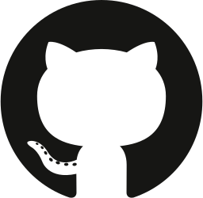
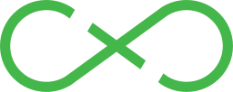
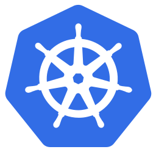
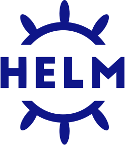
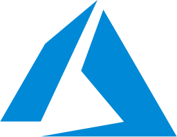
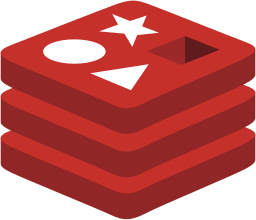

Repos das APIs
Push na main de zisp-api, zisp-vpn-api ou zisp-super-api.
GATILHOO GitHub publica imagens no Amazon ECR. O Flux, dentro do k3s na VPS, consulta o registry e o Git, atualiza as versões declaradas e aplica os releases.

Push na main de zisp-api, zisp-vpn-api ou zisp-super-api.
GATILHO

Workflow constrói a imagem e cria a tag timestamp + SHA.
BUILDO workflow assume a role de push com credenciais temporárias.
SEM CHAVE AWS NO CIImagem privada publicada nos repositórios da conta AWS.
PUSH DA IMAGEM
Flux consulta o ECR. ImagePolicy seleciona a tag mais recente.
PULL DO REGISTRYFlux grava a nova tag nos manifests do zisp-infra.
COMMIT GITOPS
GitRepository e Kustomizations consultam o Git e reconciliam o cluster.
PULL DO GIT
Jobs Prisma aplicam migrações; Deployments recebem a nova imagem.
ROLLOUT
VPS Azure · k3s single node · produçãozisp-api, zisp-vpn-api e zisp-super-api. Traefik expõe duas APIs por HTTPS; a VPN atende pelo host.
cert-manager emite certificados Let's Encrypt. Traefik publica api.zisp.com.br e super-api.zisp.com.br.

Estado e filasRedis BullMQ e Redis Monitor executam no cluster. Postgres da aplicação fica no Supabase.
O cluster atual foi inicializado localmente. O workflow manual de bootstrap depende da configuração dos GitHub Secrets.
CronJob renova o pull secret a cada 8 horas nos namespaces zisp e flux-system.
 →
→
CronJobs enviam dumps de Postgres, Redis e chap-secrets para o Amazon S3.